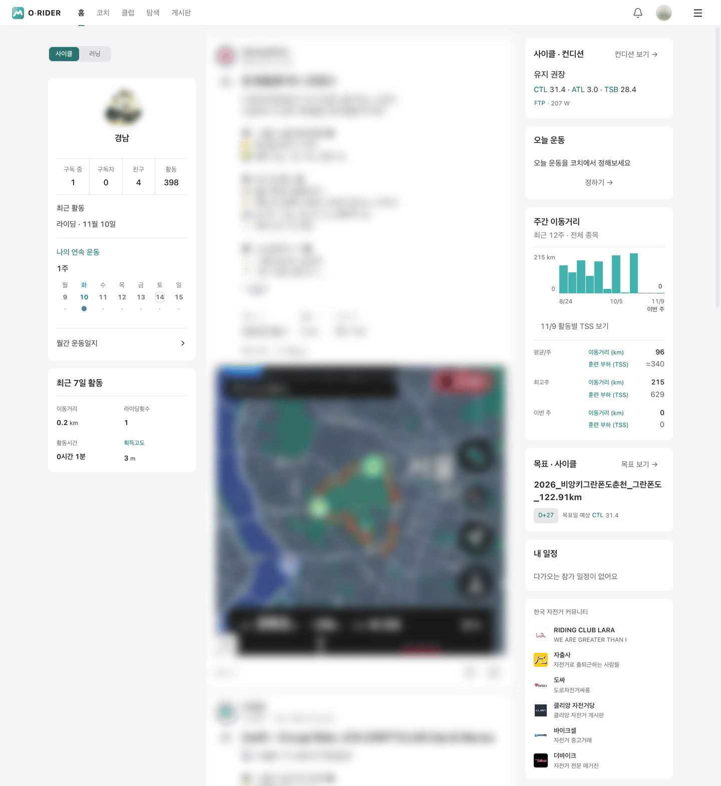
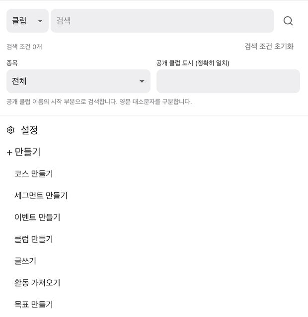
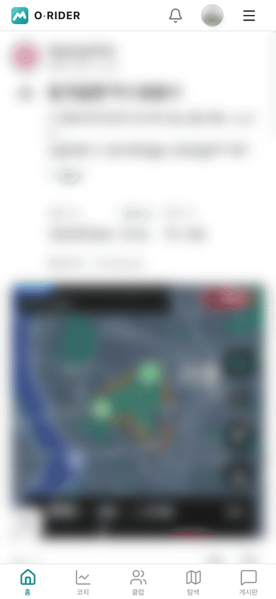

1. 시작하기
이 장에서 할 수 있는 것
- 앱과 같은 계정으로 웹에 로그인합니다. Google · 네이버 · 카카오 · Strava · 디스코드 중에서 고릅니다.
- 위쪽 메뉴 5개(홈 · 코치 · 클럽 · 탐색 · 게시판)와 오른쪽 위 버튼(알림 · 아바타 · ☰ 메뉴)이 어디로 가는지 익힙니다.
- 종목 칩(사이클 · 러닝)으로 보고 싶은 종목을 고르고, 처음 해 둘 설정을 마칩니다.
1.1 앱은 기록하고, 웹은 되짚어 봅니다
오라이더 앱과 웹은 같은 계정의 같은 데이터를 씁니다. 쓰는 때와 목적이 다릅니다.
| 앱 (휴대폰·워치) | 웹 (orider.co.kr) | |
|---|---|---|
| 언제 | 라이딩·러닝을 하는 동안 | 운동을 마친 뒤 |
| 하는 일 | 기록 시작·일시정지·종료, 센서 연결 | 기록 확인, 분석, 컨디션·계획 관리, 클럽·이벤트 |
| 궁금한 것 | "지금 속도·페이스가 얼마지?" | "이번 주에 얼마나 했고, 내일은 무엇을 할까?" |
기록 시작·종료는 앱에서만 합니다. 앱 사용법은 앱 설명서를 보세요.
1.2 로그인하기
따라 하기
- 브라우저에서 orider.co.kr을 엽니다.
- PC에서는 오른쪽 위 기록을 저장하려면 로그인을, 휴대폰에서는 홈 맨 위 시작하기(또는 ☰ 메뉴 안의 로그인 버튼)를 누릅니다.
- 로그인 창에서 앱에서 쓰는 것과 같은 로그인 방법을 고릅니다.
버튼 누르면 Google로 계속하기 작은 Google 로그인 창이 뜹니다. 창이 막히면 Google 화면으로 넘어갔다가 돌아옵니다. 네이버로 계속하기 · 카카오로 계속하기 · Strava로 계속하기 · 디스코드로 계속하기 그 서비스의 동의 화면으로 넘어갔다가 "로그인 처리 중입니다…"를 거쳐 오라이더로 돌아옵니다. - 로그인되면 오른쪽 위에 내 사진(아바타)이 나타나고, 홈에 내 기록이 보입니다. 처음 가입했다면 안내 화면(1.5)이 먼저 나옵니다.
웹 로그인 창에는 Apple이 없습니다. 앱에서 Apple로만 로그인해 왔다면, 웹에서 다른 방법으로 새로 로그인하는 순간 기록이 없는 별도 계정이 만들어집니다. 로그인하지 않고(게스트로) 쓴 기록은 웹에서 볼 수 없습니다.
Strava로 계속하기는 로그인만 합니다. Strava 활동을 자동으로 가져오려면 로그인 뒤 설정 > 연결 앱에서 Strava를 따로 연결하세요(9장). 이미 다른 오라이더 계정의 활동 연동에 쓰고 있는 Strava 계정이면 "이미 활동 연동에 사용 중인 Strava 계정입니다"가 나옵니다. 이때는 원래 로그인 방법으로 들어간 뒤 설정 > 계정에서 Strava를 연결합니다.
다른 로그인 방법(다른 Google 계정, 네이버, 카카오 등)으로 들어가면 기록이 하나도 없는 빈 계정이 열립니다. 기록이 안 보이면 먼저 아바타를 눌러 맨 위 이름이 내 계정인지 확인하세요.
로그인 방법 여러 개를 한 계정에 묶기
원래 로그인 방법으로 들어간 뒤 설정 > 계정 > 로그인 연결에서 Google · 네이버 · 카카오 · Strava · 디스코드 옆 연결을 누르면, 다음부터 그 서비스로도 같은 계정에 들어옵니다. 그 서비스로 이미 빈 오라이더 계정이 만들어져 있었다면 "기존 O-Rider 계정에 연결할까요?"를 묻고, 현재 계정에 연결하기를 누르면 합쳐집니다. 별도 계정에 기록이나 연결된 서비스가 있으면 자동으로 합치지 않습니다(10.1 로그인 연결).
로그인하지 않아도 공개 활동·코스·게시판 같은 일부 화면은 볼 수 있습니다. 내 기록, 코치, 설정은 로그인해야 열립니다.
1.3 화면 구성 — 메뉴 5개와 오른쪽 위 버튼


위쪽 메뉴 (PC)
| 메뉴 | 여기서 하는 일 | 설명서 |
|---|---|---|
| 홈 | 최근 활동 피드, 최근 7일 활동, 컨디션·오늘 운동·주간 이동거리·목표·내 일정 카드 | 2장 |
| 코치 | 컨디션 · 계획/기록 · 목표 · 분석 · 대화 (탭 5개) | 6장, 7장 |
| 클럽 | 내가 속한 클럽, 클럽 찾기·만들기, 초대 코드로 가입 | 5장 |
| 탐색 | 코스 · 세그먼트 · 이벤트 · 챌린지 · 사람 · 기록 활용 | 4장, 5.6, 5.7 |
| 게시판 | 전체 · 작업일지 · 문의/신고 · 이맘쯤 우리는 | 4.7 |
탐색 > 사람에서는 이메일 · 닉네임 · 친구 코드로 다른 라이더를 찾아 프로필을 열고 친구 요청을 보낼 수 있습니다.
오른쪽 위 버튼
| 버튼 | 하는 일 |
|---|---|
| 종(알림) | 새 알림을 확인합니다. |
| 아바타(내 사진) | 내 프로필 · 운동일지 · 기록 · 친구 · 장비 · 설정 · 로그아웃. 받은 친구 요청이 있으면 아바타에 빨간 숫자가 붙습니다. |
| ☰ (더보기) | 오른쪽에서 메뉴 판이 열립니다. 아래 표를 보세요. |
☰ 메뉴 판 안에 있는 것
| 항목 | 하는 일 |
|---|---|
| 전체 기능 검색 | 맨 위 상자에서 검색 대상(활동 · 사람 · 클럽 · 코스 · 구간 · 게시글)을 고르고 검색어를 넣은 뒤 돋보기(검색하기)를 누릅니다. 아래 검색 조건에서 대상마다 범위를 좁힙니다. 활동이면 활동 범위 · 기간 · 종목을 고르고, 결과는 홈 피드에 나옵니다(2.2). |
| 설정 (PC) | 설정 화면을 엽니다. 계정 · 기기 · 운동 프로필 · 연결 앱 · 개발자 · 표시 · 내 데이터 (10장). 휴대폰에서는 아바타 > 설정으로 갑니다. |
| + 만들기 (PC) | 누르면 펼쳐집니다. 코스 만들기, 세그먼트 만들기, 이벤트 만들기, 클럽 만들기, 글쓰기, 활동 가져오기, 목표 만들기로 바로 갑니다. |
| 언어 | 화면 언어를 한국어·영어로 바꿉니다. |
| 아래쪽 작은 링크 | 오라이더 소개 · 개발자 문서 · 이용약관 · 개인정보처리방침 · 커뮤니티 가이드라인 · 피드백 · 문의 |
옛 설명서나 다른 글에서 본 메뉴 이름이 화면에 없다면 아래 표로 찾으세요. 옛 주소로 들어가도 새 화면으로 자동으로 옮겨 갑니다.
앱 안에서 여는 코치 화면도 웹과 같은 컨디션 · 계획/기록 · 목표 · 분석 탭으로 나뉩니다.
| 옛 이름 | 지금 위치 |
|---|---|
| 대시보드 | 홈 |
| 피트니스 | 코치 > 컨디션 (깊은 차트는 코치 > 분석) |
| 운동 계획 | 코치 > 계획/기록 > 훈련 계획 · 코치 > 목표 |
| 코치 > 오늘 운동 | 코치 > 계획/기록 > 훈련 계획 (맨 위 "오늘의 다음 운동") |
| 운동 기록 | 아바타 메뉴 > 운동일지 (= 코치 > 계획/기록 > 활동 기록·수행 확인) |
| 리더보드 | 탐색 > 세그먼트 (클럽 순위는 클럽 > 함께한 이번 주) |
| 그룹 | 클럽 |
| 커뮤니티 | 게시판 |
| 코치 > 컨디션 > 전체 종목 훈련 기준 설정 | 설정 > 운동 프로필 |
| 오른쪽 위 톱니바퀴 · + 만들기 · 검색 · KO / EN | ☰ 메뉴 판 (설정 · + 만들기 · 전체 기능 검색 · 언어) |
| 설정 > 앱 & 데이터 | 설정 > 표시 · 설정 > 내 데이터 |
1.4 종목 칩 — 사이클 · 러닝
PC 홈 왼쪽 위와 코치 화면에는 사이클 · 러닝 칩이 있습니다. 칩을 누르면 그 종목 기준으로 숫자와 카드가 바뀝니다. 코치 > 컨디션 같은 일부 화면에는 종목을 합쳐 보는 통합 칩이, 운동일지에는 모든 종목을 보는 전체 칩이 하나 더 있습니다.
- 사이클 — 거리·속도·파워(W) 기준으로 봅니다.
- 러닝 — 거리·페이스(분/km) 기준으로 봅니다. 걷기·하이킹 활동도 러닝 쪽 합계에 들어갑니다.
- 수영 — 지금은 화면에서 칩이 보이지 않습니다.
숫자가 이상하게 적거나 비어 있으면 먼저 어떤 칩이 선택돼 있는지 보세요. 사이클 칩에서는 러닝 기록이 합계에 들어가지 않습니다. 휴대폰 홈에는 칩이 없고, ☰ 메뉴의 검색 조건 종목으로 고릅니다(1.6).
1.5 처음 해 둘 설정
처음 로그인하면 3단계 안내 화면이 나옵니다. 위쪽 진행 표시("3단계 중 1단계")로 어디까지 왔는지 알 수 있습니다.
| 단계 | 화면 | 건너뛰기 |
|---|---|---|
| ① | 주 종목을 선택하세요 — 트라이애슬론 · 사이클 · 러닝 중 하나 | "나중에" 가능 |
| ② | Strava 연결 — "Strava 연결하기"로 계정을 잇습니다 | "나중에" 가능 |
| ③ | 운동 목표 설정 — "목표 설정하기" 또는 "친구 초대하고 시작" | "나중에" 가능 |
Strava로 처음 가입하면 ② 단계 없이 2단계로 끝납니다.
안내 화면을 마친 뒤 해 둘 것 (5분)
- 훈련 기준값 입력 — 설정 > 운동 프로필에서 FTP(사이클), 최대 심박, LTHR, 임계 페이스(러닝)를 확인하고 저장합니다. 체중은 설정 > 계정 > 신체 정보에서 바꿉니다(운동 프로필 FTP 아래 "키 · 체중" 줄 옆 수정으로도 갑니다). 이 값이 없으면 일부 숫자가 "가정값"으로 계산됩니다(6.4, 10.9). FTP · 최대 심박은 웹 설정 > 운동 프로필과 앱 설정 > 주행 설정 > 라이더 프로필 어느 쪽에서 바꿔도 서버가 서로 맞춰 줍니다. 가장 나중에 저장한 값이 양쪽에 적용되며, 반영까지 잠시 걸릴 수 있습니다. 분석·존·목표 판정은 웹 설정 > 운동 프로필 값을 기준으로 계산하므로, 값이 다르게 보이면 그 화면에서 확인하세요.
- 공개 범위 확인 — 설정 > 계정 > 공개 범위에서 새 활동의 기본 공개 범위를 고릅니다. 화면마다 이름이 달라도 전체 공개 · 친구 · 비공개 3단계입니다(10.1 대응표).
- 기록 가져오기 — Strava를 쓰면 설정 > 연결 앱에서 연결하고(9장), 파일이 있으면 운동일지의 업로드나 PC ☰ 메뉴 > + 만들기 > 활동 가져오기로 올립니다(2.5).
러닝을 처음 확인할 때
1.6 휴대폰 브라우저에서 볼 때

휴대폰으로 orider.co.kr을 열면 메뉴 5개가 화면 아래쪽 탭(홈 · 코치 · 클럽 · 탐색 · 게시판)으로 바뀝니다. 위쪽에는 알림(종), 아바타, ☰ 메뉴만 남습니다.
- 홈은 활동 피드 하나로 이루어집니다. PC 홈의 최근 7일 활동·컨디션·목표 카드는 휴대폰 홈에 나오지 않으니, 코치 > 컨디션이나 운동일지에서 보세요.
- 피드의 종목 · 기간 · 누구의 기록(전체 · 친구 · 내 활동)은 ☰ 메뉴 맨 위 전체 기능 검색의 검색 조건에서 고르고 돋보기를 누릅니다. 고른 조건은 다음에 홈을 열 때도 유지됩니다(2.2).
- 설정은 아바타 > 설정, 기록 파일 올리기는 아바타 > 운동일지의 업로드로 갑니다. ☰ 메뉴에는 메뉴 5개 링크와 언어, 약관 링크가 있습니다.
- 로그인하지 않았으면 홈 맨 위에 "Ride Your Time. 당신의 시간을 달리다." 소개와 시작하기 버튼이 보입니다.
1.7 자주 막히는 점
| 이럴 때 | 먼저 확인할 것 |
|---|---|
| 로그인했는데 기록이 하나도 없어요 | 앱과 같은 로그인 방법·계정인지(1.2), 앱에서 기록 저장·동기화가 끝났는지 |
| 메뉴 이름이 설명서와 달라요 | 1.3의 옛 이름 표. 그래도 다르면 화면 문구를 기준으로 하세요. |
| 톱니바퀴·검색·만들기 버튼이 안 보여요 | 오른쪽 위 ☰ 메뉴 안으로 옮겨졌습니다. 휴대폰에서는 설정이 아바타 메뉴에 있습니다. |
| 숫자가 0이거나 "—"예요 | 선택한 종목 칩, 그리고 그 숫자에 필요한 데이터(파워·심박 등)가 원본에 있는지(6.4) |
| 화면이 갑자기 어둡게(밝게) 보여요 | 테마 기본값은 시스템이라 휴대폰·컴퓨터의 밝기 모드를 따릅니다. 설정 > 표시 > 테마에서 라이트·다크로 고정할 수 있습니다(10.6). |